Примеры решения типовых задач
“ ”
– принадлежит;
”
– принадлежит;
“=>“ – следовательно;
“ø” – пустое множество, т.е. не содержащее ни одного
элемента.
“∩“ – знак пересечения.
1. Записать множество Е,
если ,
причем А={2, 4, 6, 8, 10, 12}, B={3, 6, 9, 12}.
Решение.
есть
не что иное, как объединение множеств А и В, т.е. множество
Е будет состоять из элементов, принадлежащих как множеству
А, так и множеству В: Е={2, 3, 4, 6, 8, 9, 10, 12}.
2. Записать множество ,
если А={2, 4, 6, 8, 10, 12}, B={3, 6, 9, 12}.
Требуется выполнить операцию пересечения т.е. множество
Е будет состоять только из элементов, одновременно входящих
как в множество А, так и в множество В: Е={6, 12}.
3. Записать множество ,
если А={2, 4, 6, 8, 10, 12}, B={3, 6, 9, 12}.
Требуется выполнить операцию разности т.е. множество Е
будет состоять из всех элементов множества А, не
принадлежащих В: Е={2, 4, 8, 10}.
4. Записать множество ,
если А={2, 4, 6, 8, 10, 12}, B={3, 6, 9, 12}.
Из предыдущего примера имеем
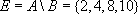
. Для получения окончательного ответа требуется выполнить операцию дополнения т.е. множество Е будет состоять из элементов множества В: Е={3, 6, 9, 12}.
5. Проиллюстрировать с
помощью кругов Эйлера следующую формулу:
Выполняя действие в скобках получим:
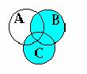
После этого получаем А\Е т.е. необходимо выделить участок множества А, не принадлежащий множеству Е. Ответ примет форму:
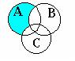
6. Проиллюстрировать с
помощью Диаграмм Венна верность тождества:
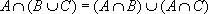
.Проиллюстрируем левую часть тождества, обозначив сначала объединение множеств В и С,
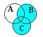
затем пересечение множеств А и . Окончательный вид левой части:
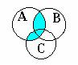
Теперь проиллюстрируем правую часть:
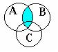
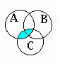
окончательный вид правой части:
Как видим диаграммы совпадают, следовательно тождество верно.
7. По диаграмме Венна записать формулу:
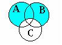
Запишем сначала ,
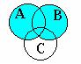
затем , получим:
8. Доказать
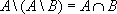
Решение.
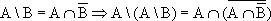
,по закону да Моргана и закону дистрибутивности
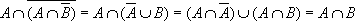
9. Доказать, что ,
где А и В - множества.
Решение. -
по определению операции разности.
Подставим выражение в формулу и вынесем А за скобки:
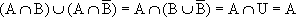
10. Доказать, что тогда
и только тогда, когда иначе .
Решение. Пусть U - универсальное множество, тогда .
Покажем, что .
Пусть .
Покажем, что
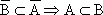
.Пусть
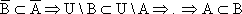
.Отсюда следует, что .